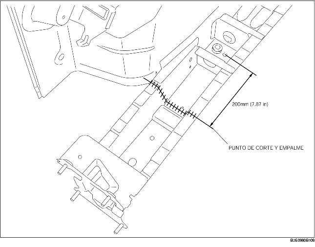

1. Cortar los componentes nuevo y actual en el punto de corte y empalme y biselarlos.
2. Para cortar y empalmar los componentes nuevos, cortar en los puntos indicados en la figura y biselar los puntos de corte y empalme del componente nuevo.
3. Cuando se instalan componentes nuevos, instalarlos provisionalmente a los componentes actuales, luego medir y ajustar la carrocería según las dimensiones estándar.
4. Instalar los nuevos componentes provisionalmente y asegurarse que se junten perfectamente.
